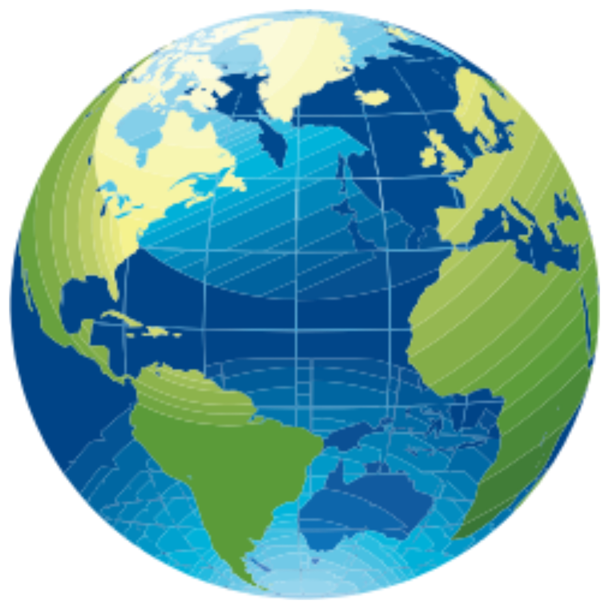
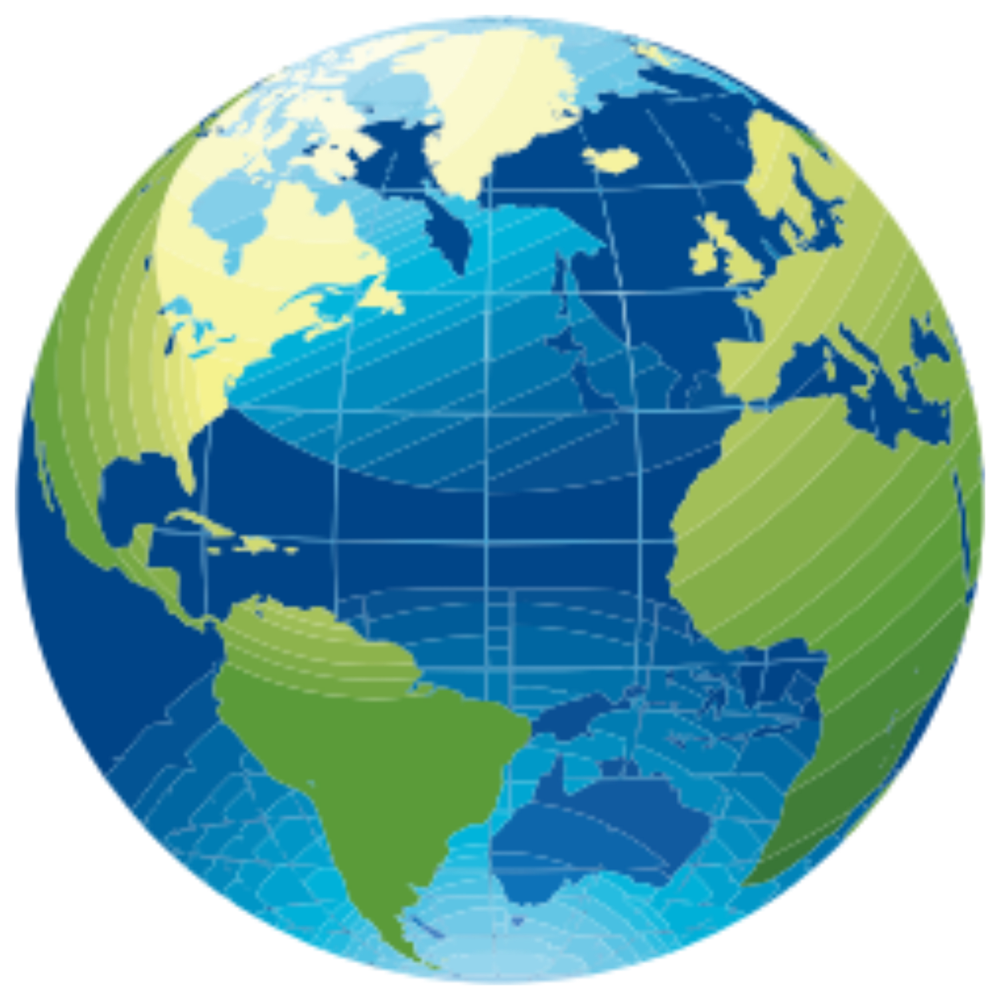
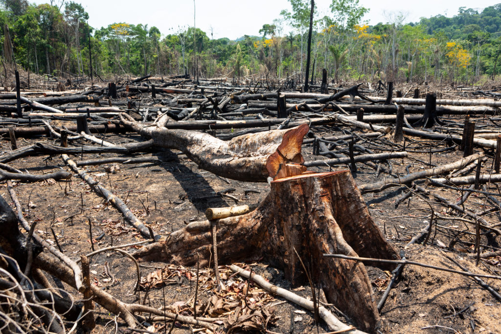
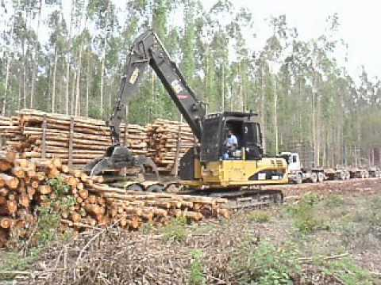
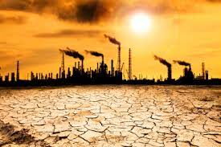

Desmatamento
O desmatamento é caracterizado pela remoção da vegetação nativa de uma área. A sua causa está atrelada principalmente à ação antrópica, ou seja, à atuação do homem no desenvolvimento das atividades produtivas. As consequências do desmatamento estão ligadas à perda da biodiversidade e, consequentemente, à extinção de espécies. Além disso, o desmate provoca um amplo conjunto de impactos ambientais negativos e é apontado como um dos grandes responsáveis pelas mudanças climáticas.
O desmatamento é um fenômeno mundial. No entanto, o maior volume de ocorrências de desmate está nos países subdesenvolvidos e emergentes. No Brasil, o bioma mais atingido pelo desmatamento na atualidade é a Amazônia. O Cerrado é o segundo bioma brasileiro mais devastado. Já a Mata Atlântica foi amplamente destruída ao longo dos séculos, sendo que atualmente restam menos de 13% da vegetação originária desse bioma.
Esse cenário de devastação requer políticas preservacionistas a fim de proteger-se os recursos naturais. Desse modo, uma solução é a implementação de modelos de produção de cunho sustentável voltados para o desenvolvimento econômico em conjunto com a preservação ambiental.
Calsas do desmatamento
A principal causa do desmatamento está ligada à ação antrópica, ou seja, à atuação do ser humano no processo de remoção da vegetação. Desse modo, o desmatamento, na maior parte das áreas florestadas, é causado diretamente pelas atividades produtivas desenvolvidas pelo ser humano em sua totalidade. A remoção da vegetação é realizada pelo corte direto, por máquinas e ainda por outros meios, como as queimadas. Essas áreas desmatadas são comumente utilizadas para a exploração dos recursos naturais e para a ocupação do solo.
O processo de desmatamento foi iniciado mediante a necessidade de matérias-primas para a produção de diferentes elementos de uso da sociedade. Desse modo, a exploração da madeira, por exemplo, para a fabricação de papel e de móveis, é uma importante causadora do grande volume de desmatamento verificado em vários pontos do globo. Nesse contexto, destaca-se ainda a produção de carvão vegetal e de meios de transporte que utilizam a madeira em sua fabricação, como barcos. A madeira também é utilizada para a construção de casas e confecção de objetos.
Já o avanço da urbanização e da industrialização também é considerado importante vetor do desmatamento. As cidades cresceram amplamente em áreas antes florestadas, sendo a remoção da vegetação necessária para a construção de casas, prédios e ruas. Já as indústrias impulsionaram a utilização de elementos da natureza como matéria-prima. Logo, além da madeira, frutas, seivas e outros elementos florestais começaram a ser amplamente utilizados na indústria, cenário que provocou uma grande devastação de áreas de floresta.
O desmatamento também é direcionado para a utilização do solo. As práticas agrícolas e pecuárias são um exemplo desse tipo de uso, sendo que a vegetação é retirada, seja por máquinas, seja por queimadas, para ceder espaço para a implementação de grandes lavouras monocultoras e, ainda, para a criação de gado.
Na atualidade, esse é um cenário recorrente no Brasil, marcado pela expansão da fronteira agrícola em biomas como a Amazônia e o Cerrado. Nos últimos anos, o grande volume de desmatamentos verificados no Brasil tem como principal causa o desenvolvimento de atividades agropecuárias.
Consequências do desmatamento
A principal consequência do desmatamento está atrelada ao desequilíbrio ambiental provocado pela perda da vegetação nativa. A remoção da vegetação provoca uma grande perda da biodiversidade assim como a perda do habitat de animais e plantas, e, ainda, impacta diretamente na elevação do número de espécies em extinção.
Desse modo, o desmatamento causa um conjunto de impactos ambientais que geram uma grande mudança no ecossistema local, alterando drasticamente as características geográficas e biológicas da área desmatada. Além disso, o desmatamento provoca consequências sociais negativas, em especial, nas comunidades tradicionais e muito dependentes das florestas.
O processo de mudança das condições climáticas verificado no globo nos últimos anos é um fenômeno que tem como um dos causadores a crescente destruição da vegetação nativa de diferentes biomas nele. Ademais, a elevação da temperatura e a ocorrência de eventos climáticos extremos são apontadas por alguns pesquisadores como resultantes de processos de origem antrópica, sendo um dos principais o desmatamento.
Além disso, o desmatamento acelera a ocorrência de processos naturais que são intensificados pela ação humana. A remoção da vegetação impacta diretamente no aumento da erosão e da desertificação, por exemplo. No mais, o desmatamento interfere no ciclo hidrológico e ocasiona efeitos como o esgotamento das fontes de água, já que a retirada da vegetação dificulta a absorção da água da chuva pelo subsolo e o consequente abastecimento das reservas subterrâneas e das nascentes.
Soluções para o desmatamento
As soluções para o desmatamento em nível global e regional devem estar concentradas na possibilidade de diminuir-se o volume desmatado, preservar-se a biodiversidade e garantir-se condições de vida adequadas para a população. Desse modo, as soluções para o desmatamento perpassam por:
- Implementação de um modelo econômico de produção baseado no desenvolvimento sustentável;
- Participação do poder público e da iniciativa privada no desenvolvimento de ações de preservação ambiental;
- Aplicação da legislação ambiental por meio da fiscalização e da punição de crimes ambientais;
- Bonificação para produtores rurais e outros atores econômicos que contribuem para a preservação de áreas de floresta;
- Criação de unidades de conservação e preservação ambiental com foco em regiões com alta biodiversidade;
- Promoção de políticas de reflorestamento de áreas devastadas com espécies nativas e repovoamento de animais.